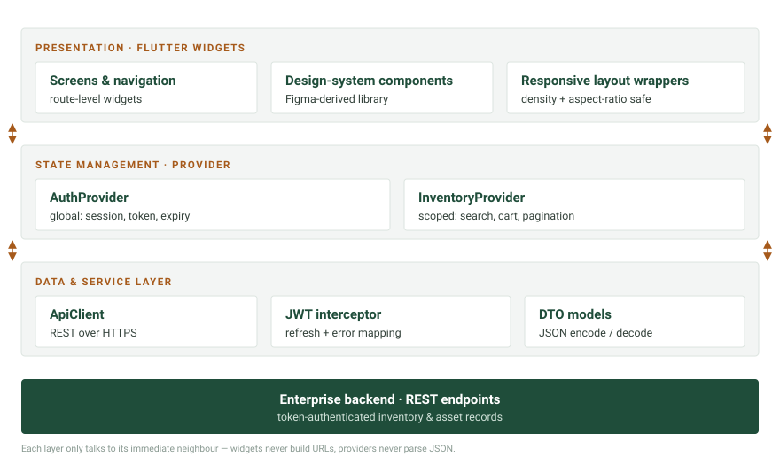
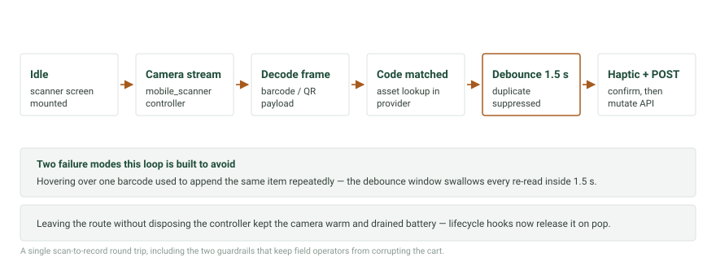

Background
In logistics and enterprise asset management, efficiency depends on how fast on-site personnel can verify physical inventory against centralized databases. Manual data entry or sluggish interfaces cause backlogs, mismatch errors, and operator fatigue in busy warehouse environments.
During my internship at Leapfactor – PT Lattice Teknologi Mandiri (Bandung, Indonesia), I joined the mobile development team to build Arjuna Mobile, an enterprise Android application engineered to make item tracking, asset verification, and inventory status mutations fast, intuitive, and error-proof.
My Role
- Hilmy Abdurrahman Darmawan — Frontend Mobile Developer (Kerja Praktek / Intern)
- Company: Leapfactor – PT Lattice Teknologi Mandiri (Agustus 2025 – Januari 2026)
I worked within an engineering team applying the Waterfall software development methodology. My primary responsibilities encompassed UI presentation implementation from Figma designs, reactive state management, camera hardware integration for scanning, and REST API consumption.
Architecture & State Management
To ensure long-term maintainability and prevent spaghetti code, the codebase adhered to modular Clean Architecture principles, clearly delineating layers:
- Presentation Layer: Modular Flutter widgets, custom design system components, themes, and responsive layout wrappers.
- State Management (Provider): Managed reactive state across the app lifecycle. Separated global state (authentication tokens, user session profile) from scoped feature state (item search filters, scanned cart items, paginated inventory lists).
- Data & Service Layer: Encapsulated RESTful HTTP communication, request/response serialization, authorization interceptors, and error handling strategies.

High-Speed Optical Barcode & QR Scanning
A central requirement for Arjuna Mobile was reliable barcode and QR code recognition in demanding conditions—dim lighting, dirty barcodes, and quick succession scans.
I integrated and tuned the mobile_scanner library:
- Configured camera controller lifecycle hooks to release native camera hardware when navigating away, preventing memory leaks and battery drain.
- Added real-time feedback loops: audible sound confirm, haptic vibration, and visual bounding box overlays when a target asset code is detected.
- Implemented debouncing logic to prevent duplicate triggering when a worker hovers the camera over the same barcode.

API Integration & Network Resilience
Arjuna Mobile communicates with enterprise backend servers through secure RESTful endpoints:
- Token Authentication: Seamless storage of JWT tokens in secure storage, with automatic session expiration detection and login redirect.
- Data Mutation & Validation: Real-time item status transitions (e.g. Received, In-Transit, Audited) with optimistic UI updates and clear error fallbacks if connection drops.
- Responsive Android Testing: Conducted compatibility checks and layout refinements across multiple screen aspect ratios, densities (xhdpi, xxhdpi), and Android OS versions.
Outcomes & Lessons Learned
The project provided deep real-world experience in engineering enterprise mobile applications:
- Mastered Flutter's rendering tree and widget optimization to maintain 60 FPS scrolling even with long paginated lists.
- Gained direct experience navigating enterprise client requirements, formal code reviews, and software testing procedures.
- Proved the effectiveness of pairing clean UI design with robust state management in high-throughput operational software.